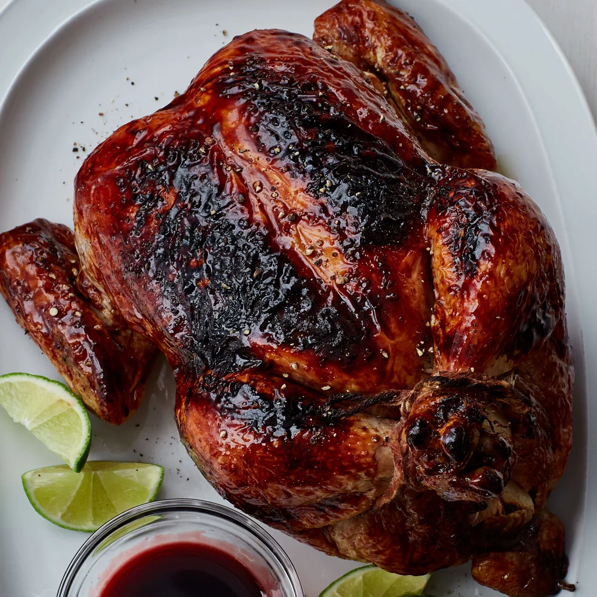

Pomegranate Chicken

Basting a chicken with a sweet pomegranate reduction makes a lovely dish for Seder.
Ingredients:
- 2 cups pomegranate juice
- 1/4 cup packed brown sugar
- 1 tbsp cider vinegar
- 2 cloves garlic, peeled and smashed
- 1 tbsp lime juice
- 1 lime
- 1 (4lb) whole chicken
- 1/2 small onion
- 1 1/4 tsp salt divided
- 1 bay leaf
- 1/2 tsp black pepper
- 1/2 tsp dried rosemary
Steps:
- Preheat oven to 400 degrees F (200 degrees C).
- Stir pomegranate juice, brown sugar, vinegar, and garlic together in a saucepan. Bring to a boil over medium-high heat. Cook, stirring occasionally, until mixture is reduced to 3/4 cup, about 10 minutes. Remove from heat and discard garlic, then stir in lime juice and let cool 5 minutes. Set aside 6 tablespoons pomegranate syrup.
- Poke several holes in lime with a fork and insert into chicken cavity along with onion, 1/2 teaspoon salt, bay leaf, pepper, and rosemary. Tie legs together with kitchen string, sprinkle skin with remaining 3/4 teaspoon salt, then transfer chicken, breast side up, to a roasting pan.
- Roast chicken, basting with pomegranate syrup every 20 minutes, until an instant-read thermometer inserted into thickest parts of all pieces registers 165 degrees F, about 1 hour total. Let chicken rest 10 minutes before carving. Serve drizzled with reserved pomegranate syrup.